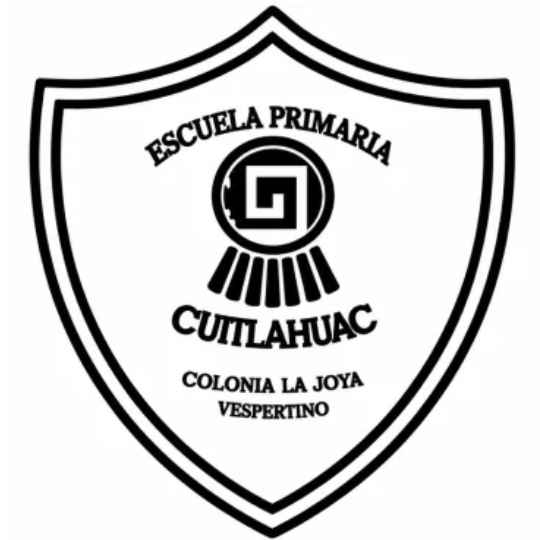

C.C.T. 15EPR4400V
Escuela Primaria
“Cuitláhuac”
Turno Vespertino | Portal de Enlaces Rápidos
Ver Ubicación en Maps
Carta de Corresponsabilidad (PDF)
Dirección del Plantel:
Zafiro esquina Acerina s/n, Colonia La Joya, Ecatepec de Morelos, Estado de México.